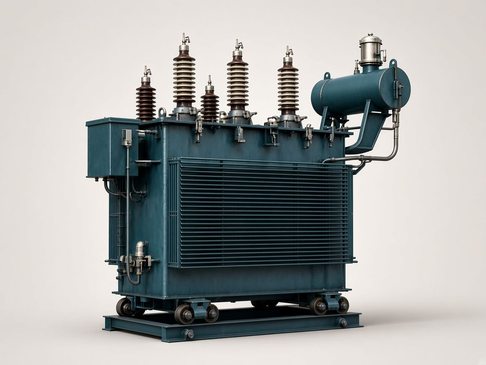
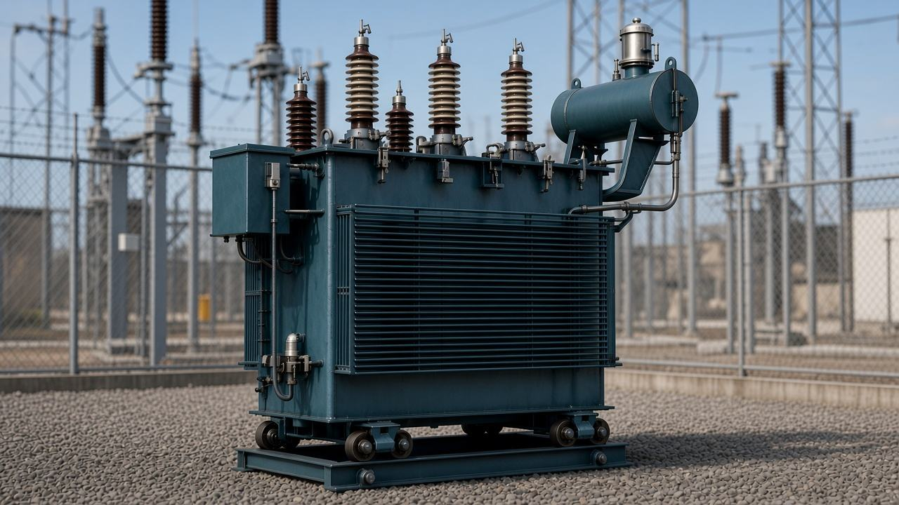

Солнечная энергетика · силовые трансформаторы
Силовые трансформаторы из Китая для станций и предприятий
Yucore Industrial Supply подбирает повышающие, понижающие и распределительные силовые трансформаторы из Китая для солнечных станций и предприятий в России. Для станции это обычно главный трансформатор между инверторами и сетью. Цена, срок и наличие подтверждаются только в письменном коммерческом предложении. До проверки позиция не считается доступной.
Это не трансформатор тока. Измерительные трансформаторы, автоматы и контакторы остаются на странице электрооборудования. Здесь машина, которая меняет уровень напряжения.

Применение
Силовой трансформатор на открытой площадке

По заданию, не по каталогу остатков
Какие трансформаторы описывать в запросе
Официальная авторизация брендов не заявляется без письменного подтверждения по конкретному заказу. Класс напряжения и группу соединения берем из вашего проекта, а не назначаем сами.
Повышающие для солнечных станций
- Главный трансформатор между инверторами и сетью
- В китайских спецификациях его часто помечают как 主变
- Напряжение со стороны инверторов и напряжение сети
- Мощность и группа соединения из однолинейной схемы
Распределительные и понижающие
- Ввод цеха, площадки или объекта
- Напряжения ВН и НН, мощность, схема
- Охлаждение и способ установки, если они известны
- Отдельная позиция от низковольтного шкафа
Сухое или масляное исполнение
- Укажите тип, если он уже выбран проектом
- Если исполнения нет в задании, напишите об этом прямо
- Площадка и климат помогают задать правильные вопросы
- Случайный тип вместо вашего задания не предлагаем
Как проходит проверка
- Сверяем текст запроса и вложения
- Уточняем пропуски по напряжению и группе
- Отвечаем, какой вариант можно рассмотреть
- Цену и срок фиксируем только в предложении по заказу
Как это ищут
Формулировки для запроса
FAQ
Вопросы по силовым трансформаторам
Чем силовой трансформатор отличается от трансформатора тока?
Силовой трансформатор передает мощность и меняет напряжение. Трансформатор тока измеряет ток для учета и защиты и относится к низковольтной электрике. Для него открыта страница электрооборудования.
Какие параметры нужны для главного трансформатора солнечной станции?
Мощность, напряжения обеих сторон, группа соединения, исполнение, число обмоток если оно нестандартное, и город доставки. Однолинейная схема или фото шильдика заменяют часть этих пунктов. Класс напряжения из проекта не подменяется. Рядом обычно запрашивают солнечные инверторы.
Можно ли подобрать аналог по шильдику старого трансформатора?
Можно начать с фото шильдика и ограничений площадки. Замена проверяется по напряжению и группе соединения. Совпадения только по мощности недостаточно.
Публикуете ли вы срок изготовления трансформатора?
Нет. Нормы, которые нужно учесть, укажите в запросе. Срок, комплект документов и доступность подтверждаются в ответе по конкретному заказу. Авторизация бренда без письменного подтверждения по конкретному заказу не заявляется.
Где подтверждаются цена, срок и наличие?
Yucore Industrial Supply — направление Guangzhou Xiaoyu Import & Export Co., Ltd в Гуанчжоу. По категории «силовые трансформаторы» цена, срок и наличие подтверждаются только в письменном коммерческом предложении. Заявку отправляют Summer на summer@yucore.ltd или в WhatsApp +86 150 1848 5957. До проверки позиция не считается доступной.
Есть схема или шильдик?
Этого достаточно, чтобы начать проверку. Недостающие напряжения спросим до предложения.
Рядом по теме